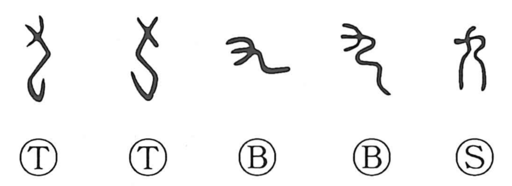

九

Kun: kokonotsu, kokono | On: kyuu, ku
nine
Explanation
Shirakawa sees 九 as a pictograph drawn from the dragon. In early forms of the dragon graph 竜, the element 虫 (here not meaning ‘insect’) represents the body, while 九 depicts the bent, severed head—understood as a male dragon’s head. The ancient graph 禹, name of the flood-taming deity, combines this male-dragon head with 虫 to portray a dragon being. The use of 九 for the numeral ‘nine’ is a later phonetic borrowing. In Japanese, kokonotsu evokes the point at which counting on the fingers comes to its end. In China, nine was revered as a sacred number—reflected in titles like the Nine Songs and Nine Chapters—so 九 likely carried an aura of sanctity.